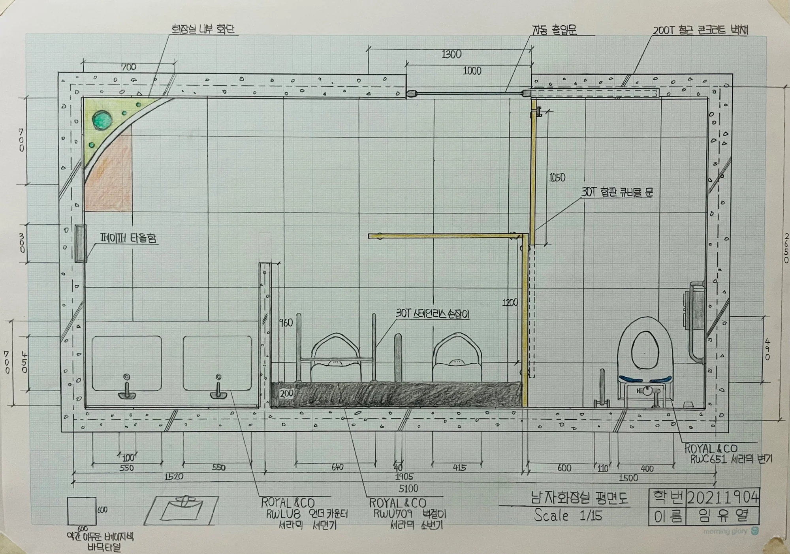

EVERYDAY SPACE / RE-DESIGN
일상의 화장실, 다시 보기
익숙한 화장실의 치수와 동선을 관찰하고, 실측 도면을 바탕으로 공간 개선안을 제안했습니다.
- YEAR / SEMESTER
- 1학년 2학기 · 2021
- PROJECT TYPE
- 실측 · 공간 개선
- CONTRIBUTION
- 개인 설계 · 수업 실습
- SITE / SUBJECT
- 기존 공중화장실

THE IDEA
생각의 출발점
새로운 공간을 설계하기 전에 일상의 공간이 어떻게 구성되는지 살펴봤습니다. 위생기구와 사용 공간을 조사하고 기존 화장실의 평면·입단면을 그린 뒤, 개선 제안과 수정 도면을 작성했습니다.
- 01
관찰과 실측
화장실의 구성 요소를 살피고 위생기구를 스케치했습니다.
- 02
현황 도면
실측한 공간을 평면도와 입단면도로 정리했습니다.
- 03
개선 제안
기존 공간의 문제를 검토하고 개선 제안서와 변경 도면을 작성했습니다.
PROCESS & OUTCOME
과정과 결과
사진을 누르면 크게 볼 수 있습니다.